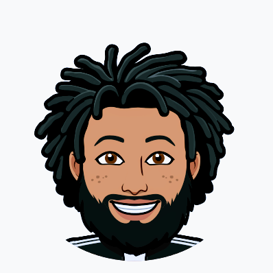

About Us
I'm Noah. I have a background in project coordination with a focus on market strategy and real estate.
I'm passionate about using innovation to add value to things, which is why I am pursuing a career in web development and design.

I'm Khalil. I come from an accounting background and I am aspiring to become a
Software Developer. The reason I enjoy software development is because it's a fun and exciting thing to do and you are always learning new things.
I’m Ben. After getting out of the military, I spent two years driving around North & South America in an old VW Van. I’m back from retirement and excited to develop software and applications that enhance people’s lives.
I'm Jennifer. I have a background in HR benefits administration. I look forward to combining my requirements analysis experience with learning to code.